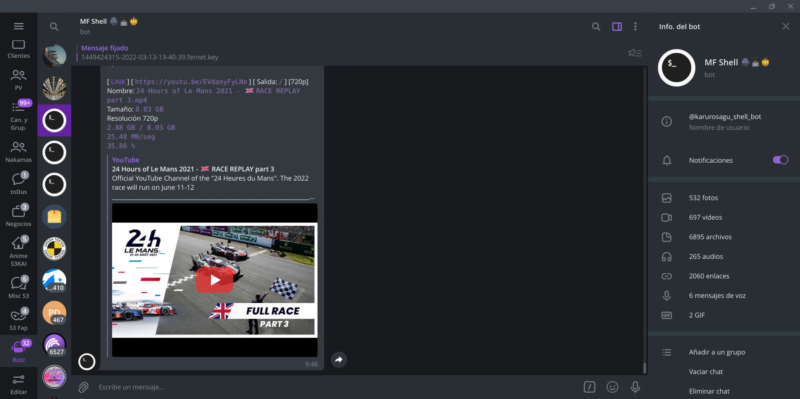
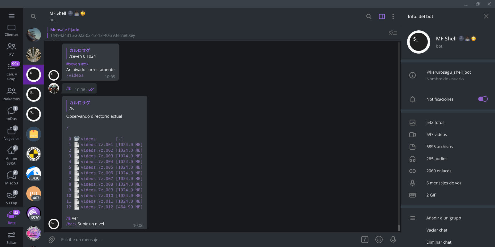
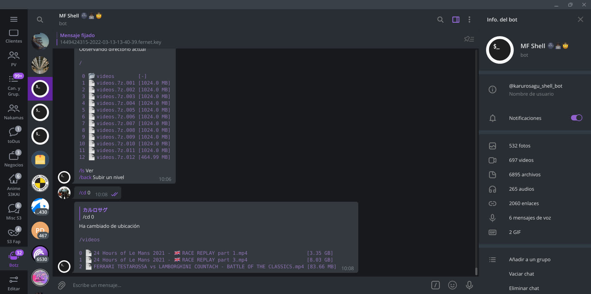

Guia de usuario de MF Shell
¿Qué es esta página?
Esta página es la guía completa del bot MF Shell, si no sabe usar el bot, lea la guía completa hasta el final y luego vea la referencia de comandos según lo que le haga falta hacer
📚 Contenido



🤔 Introducción
Habitualmente, la mayoría de los bots en Telegram que manejan archivos tienen ese efecto "boomerang", les das algo, ya sea un archivo del propio Telegram para que haga algo, un enlace a otro sitio web para que lo descargue, hacen su trabajo y te lo devuelven a tu chat, tu privado con ese bot, esto se considera "normal". Lo primero que debe tener en cuenta es que MF Shell no es un bot normal
Características de MF Shell:
→ Puede organizar como le de la gana sus archivos en el bot: creación de carpetas, mover, borrar, archivar y hasta cifrar archivos
→ Numerosas plataformas soportadas, desde el típico Youtube, sitios de alojamiento de archivos como MEGA, hasta tiendas de aplicaciones de terceros e incluso sitios para leer manga y comics en línea
→ Procesamientos en masa principalmente descargar o subir grandes números de archivos
→ Sistema de colas por cada tipo de transferencia y un conjunto de herramientas para administrar estas colas
→ Servidor web adjunto con funciones para descargar con mayor facilidad los archivos por descarga directa usando aplicaciones como IDM
Básicamente en este bot el flujo de trabajo se resume en:
Descargar de donde sea → Reorganizar → Subir al chat o compartir por HTTP
1 - Descargar archivos ya sea de un sitio web cualquiera o del propio Telegram al bot
2 - Dividir archivos, agruparlos, cifrarlos, lo que sea, y como a usted le guste
3 - Subir denuevo los archivos resultantes al chat o compartir en el servidor web del bot y hacer una descarga directa
La guía ha resultado ser densa para muchos usuarios, es por eso que en este post hay un tutorial de uso básico del bot, donde se explica y se muestra casi todos los comandos más usados del bot
IMPORTANTE:
→ En el tutorial se usa un comando llamado /zipper, este comando ya no existe en el bot, fue remplazado por /seven, que se usa prácticamente igual y tiene algunas mejoras
→ El tutorial no es el final, es solo la punta del iceberg, para entender todo, debe seguir leyendo hasta el final
📂 Los elementos del sistema de archivos
En MF Shell cada usuario tiene su propio directorio (carpeta) donde puede trabajar, y dentro, el usuario puede crear más subdirectorios para agrupar los archivos
Hay una ubicación considerada como la "actual", que es el directorio donde usted está parado, puede verlo ejecutando /ls
Los archivos y directorios se organizan y se enumeran partiendo desde el 0 como primer elemento. Los directorios se listan antes que los archivos siempre
De cero en adelante, son todos los elementos del sistema de archivos que están a simple vista. Sin ebmargo, por debajo de cero se encuentran los niveles superiores. Por ejemplo, suponga que se encuentra en /cosas/hoy, el nivel superior o directorio padre donde usted se encuentra (-1) es /cosas y dos niveles más arriba (-2) es la raiz. Por encima del directorio raiz no hay niveles superiores y es el padre de todos
Tenga en cuenta que las enumeraciones desde cero no son solamente en el sistema de archivos, esto también se da en las colas excepto la parte de seleccionar por debajo de cero
Por último y no menos importante, estas enumeraciones se llaman índices
👈 Los tipos de selección
En MF Shell, todos los comandos que trabajan con archivos y el comando /que, usan selectores, cada uno con su propio formato. Los selectores son argumentos para seleccionar elementos, si se trata de un comando relacionado con el sistema de archivos del bot, el selector es para seleccionar algo que tengas delante por ejemplo
Note que en la documentación de cada comando se indica los tipos de selección y tipos de elementos que soporta al seleccionar, en caso detratase solamente del sistema de archivos
Hay 3 tipos de selección:
→ Selección simple
→ Selección por rango
→ Selección libre
Selección simple
La seleccción simple es para seleccionar una ubicación o un elemento del sistema de archivos, es el más sencillo de todos
Formato: N
Ejemplos:
/ls 3
Esto es para observar el contenido del elemento 3. Si 3 es un directorio, le mostrará el contenido de ese directorio, si es un archivo... pues... no hace mucho, solo muestra al archivo solo y ya.
/ls -1
Esto es para observar el directorio contenedor, también llamado directorio padre. Ojo, no se puede tratar de acceder al directorio padre por encima de "/", porque no existe
Note que la selección simple, dependiendo del comando es el único tipo de selección donde puede seleccionar niveles superiores de donde se encuentra
Selección por rango
La selección por rango puede ser engañosa a primera vista, muchos piensan que es desde-hasta. Nada que ver con eso
Formato: N-Mr ó N-M
N y M son solo números y "r" (literalmente, una "r") es un argumento opcional. N es el índice de referencia, M indica la cantidad a seleccionar y "r" es para indicar si se selecciona en reversa.
Ejemplos:
/ls 4-3
Observar los recursos 4, 5 y 6 de la ubicación actual, es decir, se seleccionan y muestran 3 elementos a partir del índice 4
/rm 5-2r
Es para borrar los recursos 4 y 5 en la ubicación actual, es decir, se seleccionan y se borran 2 elementos a partir del índice 5 pero en reversa
En caso de que M, es decir, la cantidad a seleccionar sea 0 se seleccionan todos a partir del índice seleccionado y en caso de ser en reversa se seleccionan todos desde el índice cero hasta llegar al índice de referencia
Más ejemplos (porque hay un historial desagradable en el canal de no entender cómo funciona el rango):
/upload 6-0r
Para subir a Telegram los 6 primeros elementos (los que sean directorios no se subirán por supuesto, véase en la ayuda, el comando /upload)
/mv 4-0 2
Para mover al directorio ocupando el índice 2 del índice 4 en adelante
Selección libre
La selección libre consiste en seleccionar en un órden deseado un conjunto de elementos que a su juicio, ya sea porque están "desordenados" de alguna forma o son elementos que están muy apartados entre sí.
Formato A,B,C,D,E.....N
Los elementos se separan en comas para definir el órden en que se procesarán. Hay comandos en el que el órden de los elementos importa, como es el caso de /bren (Renombrar enumerando) y /upload
Al seleccionar no debe repetir elementos todos deben ser seleccionados una única vez, no hay un límite máximo de selección más allá de límite de elementos en el directorio, y el límite mínimo son 2 elementos, por debajo de eso no tiene sentido la selección libre, para eso mejor use una selección simple.
Por ejemplo:
/upload 4,5,1
Encolar para subir a los índices 4, 5 y 1 en el directorio actual, justamente en ese orden se agregan a la cola de subida
/mv 7,9,14 6
Mover los elementos 7, 9 y 14 al subdirectorio 6
⚙️ Límites y colas
Transferencias de red y colas
Cada comando de transferencia de red tiene una cola asociada, al cual puede frenarse o se puede cancelar el proceso de transferencia.
Cada usuario tiene un límite de 2 transferencias simultáneas
Cada cola tiene un identificador, este identificador se usa en comandos que administran colas
Por ejemplo, si agrega una o varias URLs con /wget, y la cola estaba vacía, el comando empezará a trabajar, si sigue ejecutando a dicho comando pero con otras URLs mientras está trabajando, la cola de "w" (que es la cola que identifica a /wget) se irá llenando
Para más información, véase los comandos para gestionar colas aquí
Comandos regulados
Hay comandos, o una parte de ellos donde se realizan tareas intensivas o simplemente reguladas, ejecutarlas simultáneamente sin ningún tipo de control puede ocasionar que el bot se desestabilice, no es primera vez que pasa. Es por eso que en el bot hay bloqueos de comandos y una cola global para procesos pesados
Básicamente nadie puede ejecutar simultaneamente estos comandos de forma simultanea, lo que se hace es encolar todas estas peticiones para realizar estos procesos, esto se hace con el fin de evitar que ocurra un desbordamiento de memoria o de CPU en el bot
Hay 2 colas globales, una se llama INT y la otra se llama SUB. Los comandos /crypt, /seven y /ytdl tienen una parte donde realizan procesamiento intensivo y en el caso de /seven, es un comando bastante uado en el bot, asi que no se sorprenda si se ve haciendo la cola INT. El comando /mediainfo por ahora es el único que puebla la cola SUB, asi que es poco probable verse envuelto en una cola SUB
✍️ Consejos
El comando /start sirve para consultar la cantidad de transferencias simultáneas, el estado del archivador y también otros datos útiles para no "perderse"
Si la cola de procesos pesados o de subprocesos se alarga, y se queda mucho tiempo viendo cómo no avanza, debe reportarlo al administrador a través del grupo, al igual que si tiene una "rotura" en una cola
Cada cuenta de MF Shell tiene un sitio web asociado, en este sitio web hay una sección de noticias donde se puede ver el "uptime" (tiempo de actividad) que lleva el bot, tenga en cuenta que el bot es reiniciado cada 24 horas, borrando todo lo que hay dentro